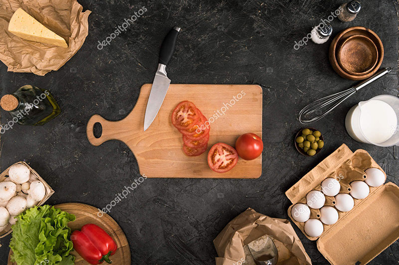

How To Cook When You Finally Upgrade From Your Mini Fridge and Microwave
Are you a college student trying to navigate the world of cooking for yourself for the first time? Maybe you are living in your first apartment and trying to find new ways to spice up your meals. Well, look no further! This website is going to be your crash course to everything you need to know about cooking delicious, easy meals for yourself.
Cooking for yourself can feel both liberating and stress-inducing. I am learning how to navigate the world of living in an apartment without a meal plan or parents to cook for me for the first time this semester. College life can be extremely hectic with classes, exams, and social activities which can leave little time for cooking. But that doesn’t mean we should have to sacrifice flavor and nutrition. This website is going to be my guide to my favorite meals, as well as tips and tricks I have learned so far!
I hope that this website encourages you to embrace the challenges and triumphs of cooking in college. Whether you’re a newbie in the kitchen or a seasoned student I believe that everyone can take away some piece of knowledge from the information I have provided. As I navigate this exciting phase of living independently for the first time, I’ve been able to discover the enjoyment in cooking and I hope to share some of that with every one of you.